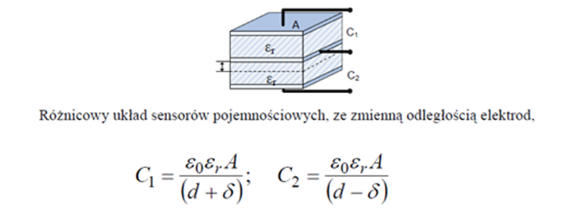

·
Teoria
·
coœtam
Wœród czujników mierzšcych przyœpieszenie lub wibracje wyró¿nia siê trzy g³ówne rodzaje akcelerometrów: pojemnoœciowe, piezoelektryczne oraz piezorezystancyjne. Ka¿dy z trzech rodzajów ma swoje wady i zalety i jest stosowany w innej dziedzinie pomiarów. Akcelerometry piezorezystancyjne najlepiej sprawdzajš siê przy pomiarach silnych, impulsowych drgañ. Akcelerometry piezoelektryczne u¿ywane sš w wielu rozwišzaniach przemys³owych, znajdujš swoje miejsce w wagach domowych jak i przy bardzo czu³ych pomiarach sejsmicznych. Rodzaj czujnika, który zostanie szerzej opisany w ramach tego dokumentu to Akcelerometr pojemnoœciowy. Czujnik pojemnoœciowy nie charakteryzuje siê tak imponujšcš dok³adnoœciš jak dwa pozosta³e typy, lecz dziêki zastosowaniu i rozwoju technologii MEMS oraz niskiej cenie zyskuje coraz wiêkszš popularnoœæ w niewielkich lub mniej wymagajšcych systemach elektronicznych.
Technologia MEMS to skrót od „Micro-electro-mechanical systems” co mo¿na przet³umaczyæ na systemy elektryczno-mechaniczne w skali mikro. Jest ona stosunkowo nowš metodš, dla której pierwsze komercyjne zastosowania przypadajš na lata 90 XX wieku. Technologia ta pozwala na wytwarzanie zintegrowanych systemów o wielkoœci od mikro- do mili- metrów. Sam proces wytwarzania charakteryzuje siê wysokš z³o¿onoœciš i obejmuje wiele dziedzin nauki z pogranicza elektroniki, mechaniki, chemii oraz optyki. Technologia obejmuje wytworzenie w skali mikro nie tylko elementów mechanicznych i sensorów, ale te¿ przetworników i innej elektroniki. Z pomocš tej technologii powstaje wiele urzšdzeñ w skali mikro – dŸwignie, ko³a zêbate, wszystkie czujniki, których dzia³anie mo¿na oprzeæ o element mechaniczny, a nawet mikrosilniki.
Niewielkie wymiary oraz waga akcelerometru pojemnoœciowego sprawiajš, ¿e jest on preferowany we wszystkich systemach, które same w sobie starajš siê ograniczyæ rozmiary – jak np. wœród segmentu elektroniki ubieralnej (smartwatche) i/lub ograniczyæ wagê jak wœród bezza³ogowych systemów powietrznych. Nie bez znaczenia jest te¿ fakt, ¿e typowe akcelerometry sš czujnikami kontaktowymi – oznacza to, ¿e muszš przylegaæ/byæ po³šczone z badanym obiektem. Powoduje to zmianê parametrów badanego urzšdzenia na skutek do³šczenia dodatkowej masy, np. przy pomiarze wibracji. Im czujnik ma mniejszš wymiary i wagê, tym s³abiej wp³ywa na tš zmianê parametrów, co mo¿na zaliczyæ, jako zaletê omawianego czujnika.
Innš zaletš jest najni¿sza wœród wszystkich typów akcelerometrów cena. Dziêki ni¿szemu kosztowi i wymiarom, akcelerometry mogš zaczšæ pe³niæ wiêkszš rolê w urzšdzeniach codziennego u¿ytku, oraz sš wykorzystywane w aparaturach medycznych np. obecnie bardzo popularne urzšdzenia do dok³adnego pomiaru ciœnienia krwi. Wykorzystanie technologii MEMS pozwoli³o na mniej inwazyjne i tañsze pomiary w szpitalach.
ZASADA DZIA£ANIA
W akcelerometrze pojemnoœciowym sensorem czu³ym na przyœpieszenie jest kondensator. Przy³o¿ona si³a wprawia w ruch ok³adki kondensatora skutkujšc pojawieniem siê zmiennej pojemnoœci na jego wyjœciu. Pojemnoœæ ta jest zmieniana z wykorzystaniem przetwornika na sygna³ napiêciowy.
Masa bezw³adna mechanizmu przymocowana jest za pomocš sprê¿ystego materia³u, dziêki czemu ³atwo przejmuje drgania ca³ego uk³adu. Budowa akcelerometru pojemnoœciowego oparta jest na koncepcji kondensatora grzebieniowego (rys 1)

Rys 1. Wizualizacja budowy kondensatora grzebieniowego
Sensor sk³ada siê z belki nieruchomej oraz ruchomej (wspomniana masa bezw³adna) których elementy (ok³adki) nachodzš na siebie tworzšc kondensator. Ka¿da trójka ok³adka-pusta przestrzeñ-ok³adka tworzy osobny kondensator, ³atwo wiêc zauwa¿yæ ¿e podczas drgañ odczyty takich mikro-kondensatorów bêdš mieæ (w przybli¿eniu) maksymalnie dwie wartoœci – jednš dla uk³adów z belkš ruchomš bli¿ej ok³adki nieruchomej, oraz drugš gdy ta odleg³oœæ siê zwiêkszy³a – konfiguracja ta nosi nazwê uk³adu ró¿nicowego. Majšc to na uwadze uk³ad posiada po³šczone ze sobš co drugie wyjœcie kondensatora aby spotêgowaæ powstajšcš ró¿nicê pojemnoœci. Budowa kondensatora grzebieniowego wraz z zastosowaniem technologii MEMS umo¿liwia osišgniêcie znacznej wartoœci powierzchni ok³adek kondensatora w ma³ej objêtoœci, a co za tym idzie samej pojemnoœci, skutkujšc znacznš poprawš czu³oœci tego mechanizmu. Ogólny wzór na zmianê pojemnoœci obu wyszczególnionych kondensatorów widnieje na rys 2

Rys 2. Pojemnoœæ kondensatorów w uk³adzie ró¿nicowym
Gdzie:
C1, C2 – pojemnoœci kondensatorow w uk³adzie ró¿nicowym
e0er РprzenikalnoϾ elektryczna
A – pole powierzchni ok³adek kondensatora
d – œrednia odleg³oœæ miêdzy parš ok³adek
δ – zmienna wartoœæ odchylenia œrodkowej ok³adki (belka
ruchoma)